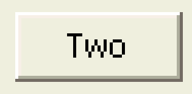
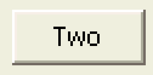
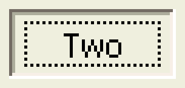
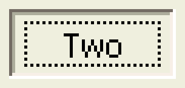
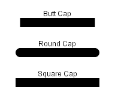
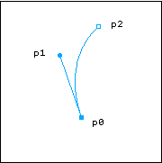
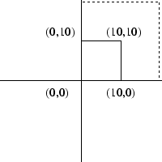
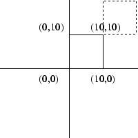
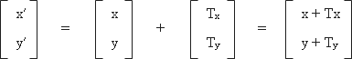
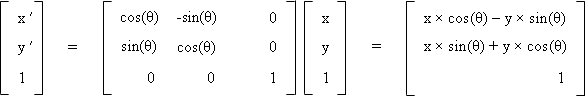

2D Graphics Primer
This section contains an overview of various 2D graphics concepts related to Piccolo. This is a huge topic which cannot be covered in depth here. But the basics are presented below. In many cases these lower level details are handled for you by Piccolo. But, understanding them will help you to use the framework more efficiently, especially when extending functionality and creating your own types.
Basics
Everything on the screen is graphics. Toolkits, like Java Swing and the .NET Windows Forms library provide ready-made standard widgets, like scrollbars and buttons, that you can add to your GUI. But, if you want to create a custom component, you have to do your own drawing!
 

 

Drawing Abstraction
Every computer graphics system (i.e., operating system) offers some notion of a canvas to draw onto.
Usually, the canvases are separated into windows that are distinct from each other, which provide a relative coordinate system and isolation. This abstraction allows the same binary-level application to render onto different kinds of surfaces such as screens, off-screen buffers (i.e., clipboards), and printers, plotters, and direct neural implants...
Most current systems offer a a resolution-independent (or device-independent) API. This is crucial. If all rendering was done in pixels, a 100 pixel rectangle would be about an inch big on most displays, but would be less than 1/10th of an inch big on some printers.
Java offers the Graphics/Graphics2D classes that present this abstraction, and C# offers the System.Drawing.Graphics class.
Coordinates
- Device coordinates
-
Coordinates of the physical device:
- Usually has origin (0, 0) at upper left
- X increases to the right
- Y increases down
- Integral coordinates always has X in [0, width] and Y in [0, height]
- Coordinates correspond to pixels
- Need to know pixel density (DPI - dots per inch) to create a specific-sized object
- Window coordinates
-
Coordinates within an operating system window
- Similar to device coordinates
- Can have out of bounds coordinates which are clipped by the OS
- If there is a frame around the window ("window dressing"), that is outside the dimensions of the window
- Physical coordinates
-
("device-independent coordinates") - correspond to physical measurements
- Defined in universal measurements - inches, millimeters, points (1/72 of an inch)
- Necessary to make graphics the same size independent of device
- Model ("local") coordinates
-
correspond to the object you are defining
-
You may want to define an application-specific coordinate system
(i.e. Origin at the center of screen with one "unit" per inch) - Need to convert between coordinate systems
-
You may want to define an application-specific coordinate system
- Transformations
-
- A "transform" object encapsulates a coordinate system
- A sequence of transforms can efficiently switch coordinate systems
Graphics Description Models
- Stroke Model
-
describes images with strokes of specified color and thickness. There are also several other parameters, such as how the line segments are connected, and whether the line is drawn solid, or with dashes. In addition, strokes can be anti-aliased.
Line from (4,5) to (9,7) in red with a thickness of 5 Circle centered at (19,8) in blue with a radius of 8 and a thickness of 3 ...

Dash Styles
End Cap Styles
Miter Join
Round Join
Bevel Join

Unantialiased Line

Antialiased Line - Region Model
-
describes images with filled areas such as arcs, text, splines, and other shapes - often other stroke objects. The area may be filled with a color, or a more complex fill such as a gradient or texture (known as a paint in Java or a Brush in C#).
Polygon filling (0, 0)-(10, 5)-(5, 10) with yellow ...

Solid Fill
Gradient Fill - Pixel Model
-
describes images as a discrete number of pixels. Each pixel is specified by a color from one of several possible color models.

NOTE: In practice, graphics are described with a combination of stroke, region, and pixel descriptions.
Drawing Shapes
Java has a generic Shape class with g2.draw() and g2.fill() methods. See
java.awt.geom. Including GeneralPath which connects points with lines or
curves. It can be rendered resolution-independent, or can be flattened with
FlatteningPathIterator
C# has fixed shapes rather than a generic Shape class. See Graphics.DrawEllipse, DrawBezier, DrawCurve, etc. C# also has a generic path called Drawing2D.GraphicsPath, rendered with Graphics.DrawPath.
Rendering Damage/Redraw
In most graphics systems, you override a window's paint method and put all your rendering code there, but you don't actually call that method directly. Instead you will request a render by telling the OS that a portion of the screen is "damaged." It is out of date and needs to be repainted. The OS will collect and merge all the damaged regions and at some point later it will call the window's paint method passing it the full region that needs to be repainted.
In java, you can request that a window be rendered with JComponent.repaint(). In C#, you would use Control.Invalidate. Or, you could just damage a portion of the canvas with repaint(x, y, w, h) in Java or Invalidate(Rectangle) in C#. Remember that these methods only request repaints to happen in the future, they do not happen immediately.
Text
Text is a special kind of graphics for both performance and human reasons. Characters in any font can be represented either as bitmaps or curves.
In some systems, characters are defined as the set of pixels (bitmap) that form each character. This approach is efficient since we need the set of pixels that make up the characters in order to draw them. But, for large font sizes the space required to store all the bitmaps becomes problematic.
Another approach is to store only the outlines of the characters as closed shapes. These character definitions can easily be scaled to any size and converted to bitmaps when necessary. Plus, drawing packages can treat characters as geometric shapes that can be manipulated like other graphical elements.
Typically you will allocate fonts up front, and then use them on demand. See the Font classes in Java and C#. Fonts get measured with Ascent, Descent, Height, Leading, Width, and Kerning. Higher quality text can be drawn with anti-aliasing or more recently, sub-pixel anti-aliasing (e.g., Microsoft Cleartype)
Color
There are various color models, which are not reflected in the API. Rather the API needs to support the color representation of the hardware. There are two basic kinds, Indexed Color (8 bit) and True Color (16, 24, 32 bit).
Indexed color uses an array of color values as a palette. An index into the color table is assigned to each pixel. Using 8 bits per pixel allows only 256 colors.
Models that can represent a large number of colors are called true color. Examples are RGB, HSV, and CMYK. The common 8-bit RGB model assigns a 3 byte value to each pixel, one byte per channel (red, green and blue). This model can represent up to 28 × 28 × 28 or 16,777,216 colors.
Clipping
Clipping, or limiting drawing to a particular area of the screen, is crucial for a window manager. Displayed objects need to be clipped to the bounds of the window in which they are displayed. But, clipping is also necessary for application efficiency and high-end graphics.
Regions, analytical descriptions of shape, are used for the basis of clipping. Regions include algebra for adding/subtracting, manipulating shape and there are various types (rectangular, rectilinear, rectilinear with holes).

Java has the Area class (made of Shapes) and C# has the Region class.
Efficiency
There are various efficiency considerations that must be made when working with 2D computer graphics. Some common mechanisms/considerations include region management (partial redraws), high-level descriptions for networked displays, display lists for complex objects that are redrawn many times, space-time trade-offs (i.e. pre-allocate thumb image and store it, or render it each time).
Geometric Equations
In a drawing program, there are some common problems such as determining what object a user clicked on, finding the nearest object to where the user clicked, or snapping a line to the nearest object. It turns out we can use a few simple geometric equations to aid with these tasks. And, there are different forms of these equations for different uses.
Implicit Forms: F(x, y) = 0
i.e.: Ax + By + c = 0
This type of equation defines a half-space. And, intersecting multiple half-spaces defines polygons. So, this kind of equation can be used to determining if a point is within a region or finding the distance from a line.
Explicit Forms: y = F(x)
i.e. y = Mx + B
Explicit functions are not good for graphics operations, since they don't plug a point in.
Parametric Forms: x = G(t), y = H(t)
i.e.: x = cos(t), y = sin(t) or,
x = x1 + t * (x2 - x1)
y = y1 + t * (y2 - y1)
Here, both x and y are functions of an independent variable. If you plug in some value for t, you can plot a point on the line. The functions x(t) and y(t) vary along the line, as t varies so you can interpolate along a line.
More generally, this is known in the computer graphics world as LERP (linear interpolation):
p = p1 + t * (p2 - p1)
The LERP equation bounds t between 0 and 1. It directly supports animation, computing intersections, scales to multiple dimensions and can be applied to many domains (points, colors, etc.).
Control Points
Used to specify geometry - often accessed through "handles" in an interface
 Cubic Bezier Curve |
 Quad Bezier Curve |
Geometric Transformations
Often an application will need to translate (move), scale, rotate, or shear it's graphical elements. This is necessary for almost any animation and many interactions. One way to achieve this would be to modify all of the points in the original object. For example, in a game of asteroids, to move the triangular ship down ten units, you could add 10 to each point in the triangle. The problem with this approach is that it forces you to modify your original object. You will no longer have a copy of the original to revert back to. And for some transformations, it's worse. What if you scale all the points by zero? Then you've lost your data altogether. A better approach would be to save your original object and somehow transform it when you render. This is commonly done in computer graphics with matrices.
Matrix Transformations
We can represent some transformations as 2x2 matrices of the following form.

We can then multiply the matrix by a column vector to apply the transformation to a point.

x′ = Ax + By
y′ = Cx + Dy
Matrices also allow as to represent a sequence of transformations.

Multiplying two matrices of the same size yields another matrix of the same size. So, the three transformations above can actually be represented as a single matrix. As long as we can represent transformations as 2x2 matrices, we can multiple them together to create one representative matrix.
Scaling
One common transformation involves scaling around the origin (0, 0). Here, we multiply all the x-coordinates by some scale factor Sx and we multiply the y-coordinates by some scale factor Sy.
|  |
x′ = x × Sx y′ = y × Sy |
If we define P as a point [x, y], we can combine the equations above to get the following representation.
P′ = S ∙ P or,

We can then represent the scale vector as 2x2 matrix.

Rotation
Another common type of transformation is rotation, where we rotate the points by some angle θ.
|
x′ = x × cos(θ) - y × sin(θ) y′ = x × sin(θ) + y × cos(θ) |
Again, we can represent rotation as a 2x2 matrix.
P′ = R ∙ P or,

Translation
A simple transformation involves adding some offset Tx to all the x-coordinates, and adding some offset Ty to all the y-coordinates. This is known as a translation.
|  |
x′ = x + Tx y′ = y + Ty |
If we define P as a point [x, y], we can combine the equations above to get the following representation:
P′ = P + T or,

But, we cannot represent translation as a 2x2 matrix! This means we won't be able to combine it with rotation and scaling transformations through matrix multiplication. The solution is to use homogeneous coordinates.
Homogeneous Coordinates
We can take a 2-dimensional point and represent it as a 3-vector.

We add a third coordinate h to every 2D point, where (x, y, h) represents the point at location (x/h, y/h). We can now represent translation as a 3x3 matrix of the following form.
P′ = T ∙ P or,

We can then change our scale and rotation matrices into 3x3 matrices as well.
P′ = S ∙ P or,

P′ = R ∙ P or,

This may not seem intuitive or exciting. But, it is quite useful for graphics operations because it allows us to combine translation, scale and rotation transformations, simply by using matrix multiplication.
Affine Transformations
The 3x3 matrix that we derived above is called an Affine Transform. It can encapsulate translate, rotate scale, shear and flip transformations. Affine Transformations have various properties.
- Origin may not map to the (0,0)
- Lines map to lines
- Parallell lines remain parallel
- Ratios are preserved
- Closed under composition
Matrix Composition
As we discussed above, we can multiply various matrices together, each of which represent a transformation, in order get one general representation. For example, if we scale, rotate and then translate, we will have done the following.
P′ = ( T ∙ (R ∙ (S ∙ P)))
We can then separate out our matrix.
P′ = ( T ∙ R ∙ S) ∙ P
M = TRS
However, matrix multiplication is not commutative.
M1 ∙ M2 != M2 ∙ M1
To apply a transformation after the current one, we post-multiply the matrix.
P′ = Mnew ∙ Mcurrent P
To apply a transformation first, we pre-multiply.
P′ = Mcurrent ∙ Mnew P
Coordinate Systems
Transforms can manipulate objects or views. If we transform, draw an object, and then transform back, we are manipulating objects. But, if we set a transform once at the beginning and then draw the whole model we are manipulating the view. Actually, we are defining a new coordinate system.
It turns out an affine transform actually defines a coordinate system. Imagine we apply a rotation, followed by a translation. We can think of this as creating a rotated, translated coordinate system, with a new origin.

We can now draw objects as normal using the local coordinates of this new coordinate system. So, if we draw an object a (0, 0), it will appear at the new origin of the new coordinate system. Thinking of things this way is often simpler than thinking about transforming individual objects.
What about Piccolo?
For the most part, Piccolo handles doing things efficiently for you. The framework implements region management (only repainting the part of the screen that has changed) as well as efficient picking (determining which object the mouse is over). Piccolo's activities make it very easy to implement interpolated animations. And, in many cases, you can use convenience methods to transform nodes rather than interacting directly with matrices.
Piccolo also has a higher-level model of drawing than the one described above. Rather than drawing lots of shapes to the screen in a one large paint method and then worrying about repainting and picking them, piccolo uses an object-oriented approach. You simply add nodes to the scene-graph. Each node knows how to render and pick itself. Instead of invalidating a rectangle and then drawing in the window's paint method, you will change the node's model. For example, you may change its fill color (paint in Java, Brush in C#). Then the node will handle repainting itself with the new color.
Each node also has an affine transform that defines a local coordinate system for that node. Nodes can be arranged hierarchically, where the local coordinate system of a node is product of all the matrices from the root to the given node. So, changing a parent node's transform, will affect the child as well. For more details about coordinate systems, see Piccolo Patterns.